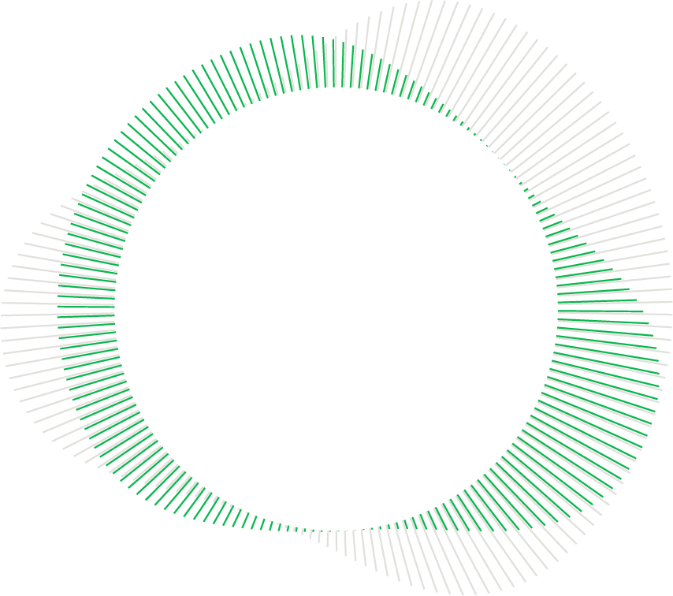
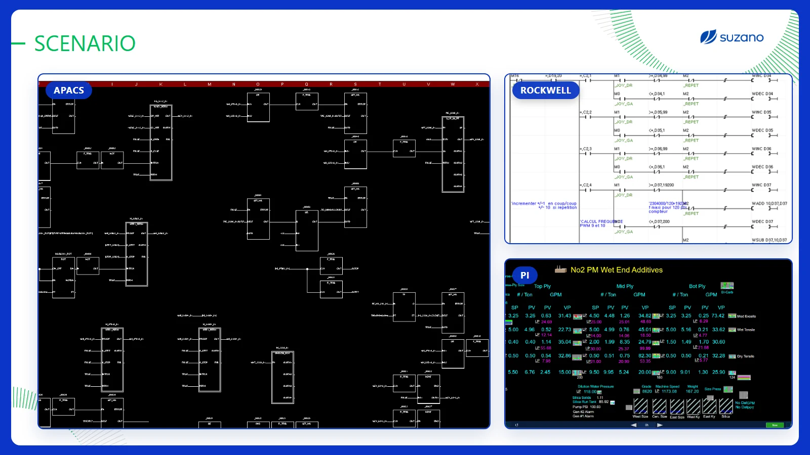
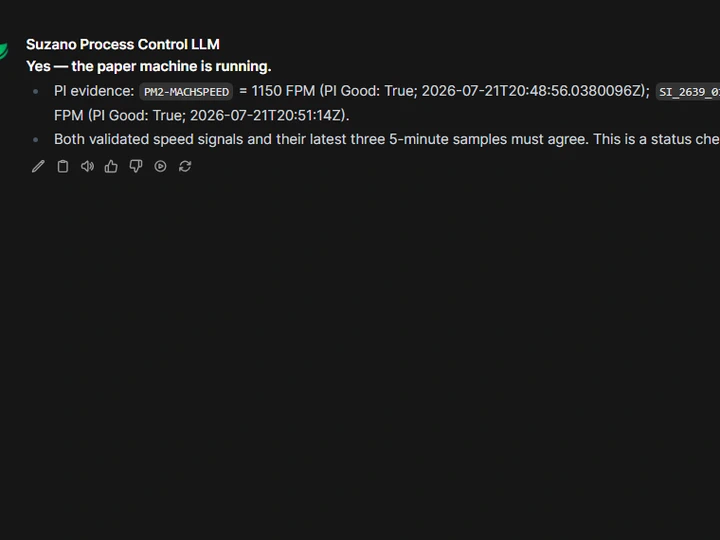
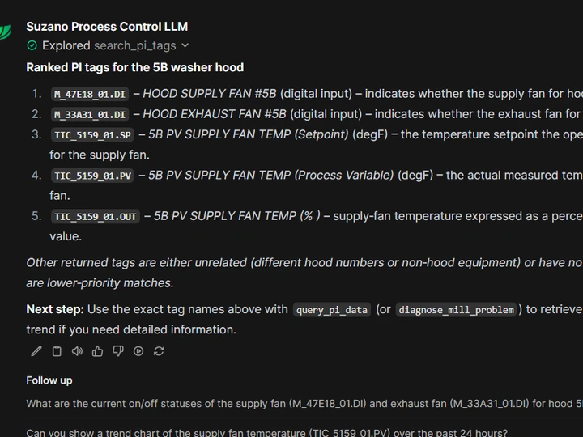
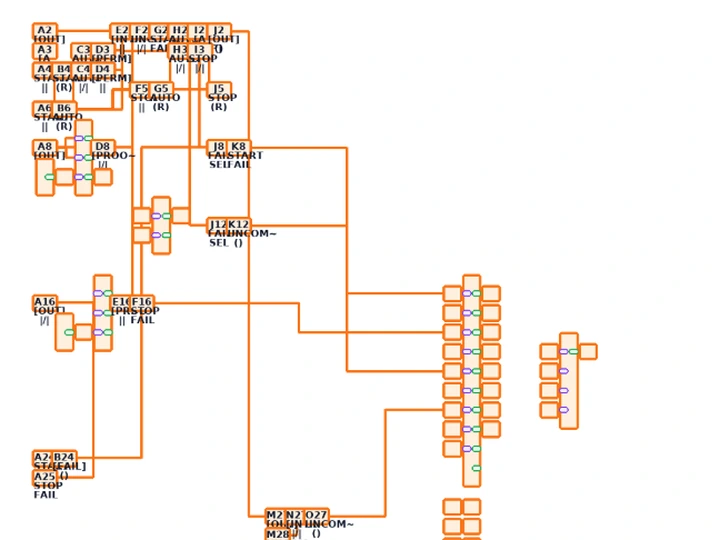
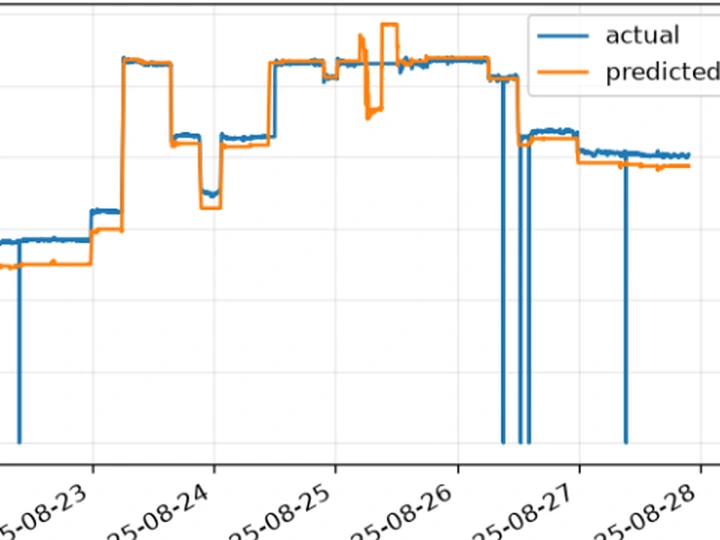
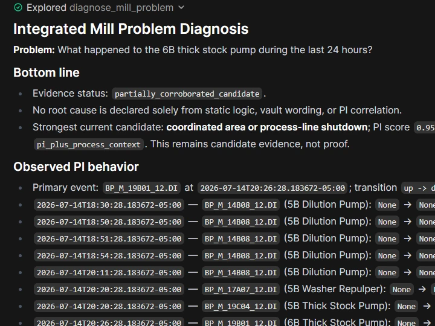
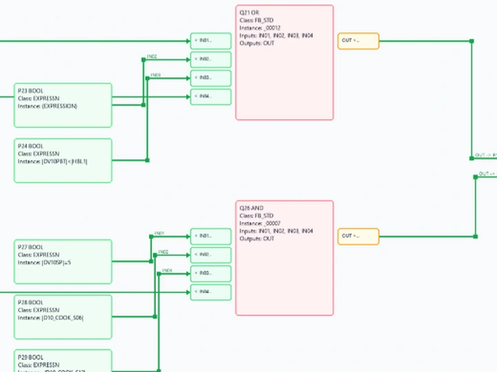

Pine Bluff · Process Control
MillSight
Ask the mill. See the evidence.
A local AI interface connecting live PI data, recovered control logic, mill knowledge, and Python simulation.
LIVE PI
CONTROL LOGIC
PYTHON SIMULATOR
LOCAL AI
Working product
A real answer in 14 seconds.
A new chat, a plain-language request, and the correct APACS loop sheet returned by the local Process Control LLM.
The edit removes processing wait time but leaves the complete answer generation visible.
Built at mill scale
Real coverage. One place to use it.
MillSight joins live process evidence with structured legacy control logic instead of asking people to fight each system separately.
Time-saving opportunity
$1.95M
annual potential · 43,250 hours
173 people × 1 hour per day × $45 per hour × 250 workdays
Illustrative estimate, not booked savings.
Why the project exists
APACS, Rockwell, PI, and documentation each hold part of the answer. MillSight reduces the time spent finding, translating, and reconciling that information.

Working examples
One interface. Different questions.
Swipe through real outputs. Tap any example to inspect the full response.

Yes, the paper machine is running.Two independent live PI speed signals agree.
LIVE PI
Check live status
Answer a direct operating question with exact tags, timestamps, and data-quality context.

Exact PI tags, ranked by relevance.The strongest matches appear first with plain-language descriptions.
TAG SEARCH
Find the right PI tags
Search by equipment or purpose, rank the best matches, and explain what each tag measures.

Rendered directly from recovered APACS logic.Tap to inspect the full sheet and explanation.
LOOP SHEETS
Retrieve and explain logic
Render an APACS sheet, trace its conditions, and distinguish configured logic from field evidence.

Blue: actual. Orange: predicted.Deviations reveal where behavior no longer matches the model.
SIMULATOR
Compare expected behavior
Use Python models to compare actual and predicted behavior and surface meaningful deviations.

Strongest candidate: coordinated shutdown.PI score 0.95. Candidate evidence, not proof.
INVESTIGATE
Investigate across sources
Combine PI behavior, control logic, simulator signals, and documentation without overstating root cause.

Inputs → expressions → outputs.The relationships remain searchable and traceable.
CONTROL LOGIC
Make legacy logic usable
Turn recovered APACS and Rockwell programs into connected, searchable visual logic.
Swipe left for more examples →
Under the hood
Live evidence leads.
The answer is stronger because each source has a defined job.
PI says what is happening.Current values, history, transitions, and data quality.
Logic says what is configured.APACS and Rockwell relationships, interlocks, reads, and writes.
Python says what was expected.Correlated behavior, simulation, and actual-versus-predicted comparisons.
MillSight supports investigation. Candidate findings remain labeled as candidates until field evidence confirms them.
Development process
From recovered logic to live intelligence.
- RecoverExtract APACS and Rockwell program data from hard-to-use source formats.
- Structure and connectLink tags, blocks, rungs, sheets, equipment, and documentation in a mill knowledge vault.
- Model behaviorUse Python formulas and correlated history to reproduce expected process behavior.
- Go liveUse PI as primary runtime evidence while control logic and simulation add context.
Questions to try
Useful at every level of the mill.
Choose a role to see a practical starting question. Tap once to copy it.
Operators
“What changed on this pump during the last two hours, and what should I watch next?”
Take it with you
Project materials.
Open the presentation, revisit the executive story, or download the short demo.
Final intern presentationPowerPoint · 6.1 MB
Executive presentationStandalone HTML · 3.9 MB
Short product demoMP4 · 14 seconds
Internal project material. Screenshots contain mill-specific tag names, timestamps, and control-logic context. Keep this version on an authenticated company or mill-network site.
Project details
Built in Process Control.
Alexander Grinman Rivera
MillSight · Final intern project
- Location
- Pine Bluff
- Department
- Process Control
- Project period
- May–July 2026
- Leader
- Zachary Herald Smith